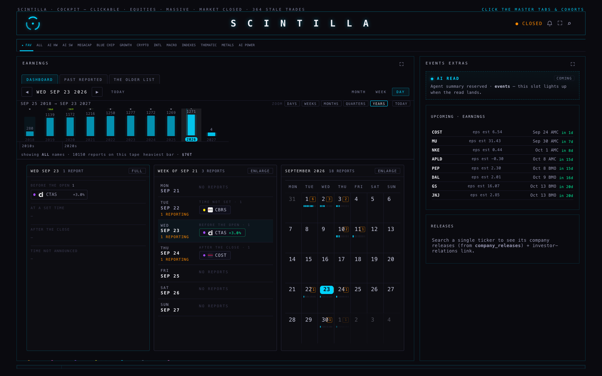
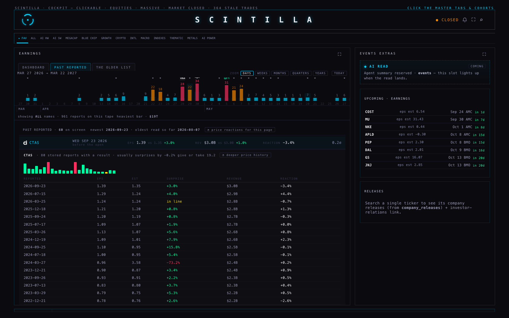
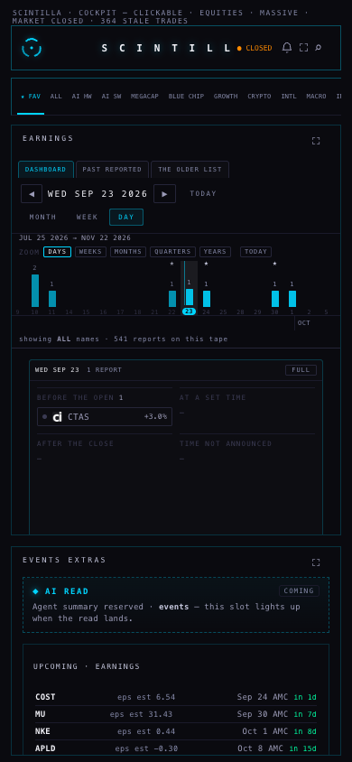

24 SEPTEMBER 2026 · M40 · branch hub/earnings-5-20260924 · nothing is deployed
In one line: the timeline is now its own instrument with its own zoom and its own history back to 1996,
the day, the week and the month sit under it as three squares instead of one long scroll, PAST REPORTED is a
full tab again, the section you had before is still there, and a result only glows when it is surprising
for that company.
1 · WHAT THE PAGE SHOWS
The timeline, at the top, on every tab
"the timeline header should not be ruled by that date selector arrow shit, it's a separate thing, its own zoom"
· "the lookback should be way longer, months doesn't even fill the screen"
It has five zoom levels: DAYS, WEEKS, MONTHS, QUARTERS, YEARS. Pinch, hold ⌘ and scroll, or tap
the strip. At YEARS one bar is a year and the whole stored calendar is a drag away.
It pages as you move. Dragging towards either end asks for the next stretch of season and draws it in
behind the bars already on screen. It stops at 1996, where the stored calendar starts.
The ◀ ▶ arrows below it no longer move it. They move the grid. The timeline has its own TODAY, on its
own row, and tapping a bar still brings that day, week or month into the grid below.
The bar's height is how many of your names report in it, scaled to the busiest bar on screen.
Its colour is how busy it is: cyan under 12 a day, orange from 12, red from 25 — the same law the month
view already used, now measured per trading day so a year is not automatically red.
The wash behind the bar is the market-cap weight — the combined size of the companies reporting in it,
counting each company once, scaled to the heaviest bar on screen. The heaviest bar's figure is printed under
the tape ($76T for a whole year of the universe; $19T for a heavy spring week).
A ★ above a bar means one of your favourites reports in it. A small logo rides the tall bars.
The blue line is still TODAY, and hovering it says so in words.

1680 wide · the timeline at YEARS: 2018 → 2027, each bar a year with its count, the market-cap wash
behind it, the decade strip underneath, and the three squares below — day, week, month, all on one screen.
The grid: three squares, not one scroll
"the month week day view below the timeline are not readjusting to their spaces, there's a lot of black
on the weekly… maybe a grid would be better — timeline day view square week view square month view square. It's a
full earnings dashboard."
DAY, WEEK and MONTH are three squares side by side on a desk, one under another on the phone. Each scrolls
inside itself; none of them can push another off the screen.
MONTH / WEEK / DAY in the bar above now enlarges a square (it shows its names) instead of hiding the
other two. A square that is not enlarged carries the shape — the load bars, the counts, the chips.
All three read one request between them.
PAST REPORTED — a tab of its own again
"I feel like we lost the tracking of the past reported… past reported probably a full tab because we
need to revamp that too, but we need it back — either we lost it or I don't know how to get to it."
Every stored report that has a result, newest first, back to 1996. It loads 60 at a time; OLDER
fetches the next 60, and it says how far back it has read.
Each row: the company (with its logo), the date and when it reported, EPS against estimate,
revenue against estimate, the price reaction, and how unusual the surprise was for that name.
Tapping a name opens its quarter-by-quarter history: a bar per quarter (green beat, red missed), then a
table of every stored report with EPS, estimate, surprise, revenue and reaction.
The filter is the cohort strip the whole room already uses: ALL, ★ FAV, or any cohort.
You can go straight there:scintillahub.ai/#past-reported. #earnings opens the room.

1680 wide · PAST REPORTED with CTAS opened: 80 stored reports, its own usual surprise, a bar per
quarter, and the table with the next session's price move beside every report.
Making earnings scintillate
A result glows only when its surprise is beyond what that company usually does — measured as a z-score
against its own stored surprises, and never called for a name with fewer than six of them. A name that beats by 30%
every quarter is not surprising when it beats by 30%. The glow itself is the Hub's one primitive (the same one the
prices use), it fires once, and it appears in the same three places: the week and day chips, the bottom earnings
band, and the past list. Every glowing number also wears a small ◆ so it is still visible after the glow fades.

390 wide (phone) · the tabs, the timeline with its own zoom row, and the day square; the week and
month squares follow under it. No sideways scrolling anywhere.
2 · WHERE EACH NUMBER COMES FROM
On screen
Read from
Notes
Who reports, and when
earnings_events (ticker, date, report_time)
22,167 stored reports, 1996-04-30 → 2027-03-25. Only the names the Hub tracks. A date the provider moved is
never shown as a second report.
EPS, estimate, revenue, surprise
earnings_events
Printed as stored. The surprise is the stored surprise_pct where there is one.
Market-cap weight (the wash)
the board's own market_cap
No extra request, and never a guess: a name whose size has not arrived is counted and said out loud.
Favourite stars
hub_favorites
The same cross-device list the board stars.
Price reaction
chart API /candles?tf=1d
Close to close on the first session the market could trade the news. Reported before the open: that day.
After the close, or with no stored report time: the next session — and the tooltip says which assumption it made.
Logos
FMP's public stock image
Nothing is stored or proxied; if an image does not load the ticker takes its place.
"Usually surprises by…"
the name's own stored surprises
One read covers every name on screen.
3 · WHAT COULD BE WRONG
The reaction is not a study. It is one close-to-close move on one session. It does not separate the
earnings from whatever else the market did that day, and where no report time is stored it assumes the news
landed after the close.
Old reports have no reaction. The chart API returns the most recent bars, about six years a name by
default (the whole stored series — back to about 2003 for a name like AAPL — on "deeper price history"). Older
than that, the reaction shows a dash and says why.
A bad stored estimate distorts a name's habit. CTAS shows "usually surprises by −0.2% give or take 19.2"
because one stored quarter has an estimate of 3.58 against an actual of 0.96 (−73%). The habit is honest about
what is stored; the stored row may not be.
The weight needs the board. On a cold load the sizes arrive with the board, so for the first few seconds
the wash is absent. It fills itself in without a reload.
The count is reports, the weight is companies. A year holds four of Apple's reports; adding Apple's size
four times said "$302T", four times the market, so the weight counts each company once per bar.
Nothing here is a recommendation. It is what was reported and what the price did next.
4 · WHAT I DID NOT DO
Nothing is deployed and nothing is pushed. The work is on hub/earnings-5-20260924, branched
from production 9d50795. You merge and deploy.
Price reactions are not fetched for a whole page by themselves. One name is one request of about 150 KB,
so a row asks for its own, or "◔ price reactions for this page" asks for all the names on screen. Nothing is
pulled until you ask.
The day square still shows its four empty slots when only one company reports that day, which leaves
some black in a small square. The enlarged square and the phone are fine; tightening the small one is a
follow-up.
No dividends, no new tables, no new job, no schedule. Nothing is written anywhere.
The "older list" tab is untouched — the same two columns, the same blocks. It is there until you say it
can go.
Not verified: how the timeline feels dragging through twenty years on your own machine with a slow
connection, and how FMP's logos look for every one of the 352 names (67–187 loaded in these screenshots, none
broken).
5 · PROOF
Screenshots are real browser captures at 1680 and 390, taken headless — no window opened on your screen.
The chart API only accepts scintillahub.ai as an origin, so for the local screenshots the browser's
cross-origin check was relaxed. That is a local test setting; the page itself asks the API in the normal way.
Tests: 523 pass, 2 fail — the same two failures production already carries (the age-wording test and
xfeed-publish). 16 tests were added or rewritten for this work.